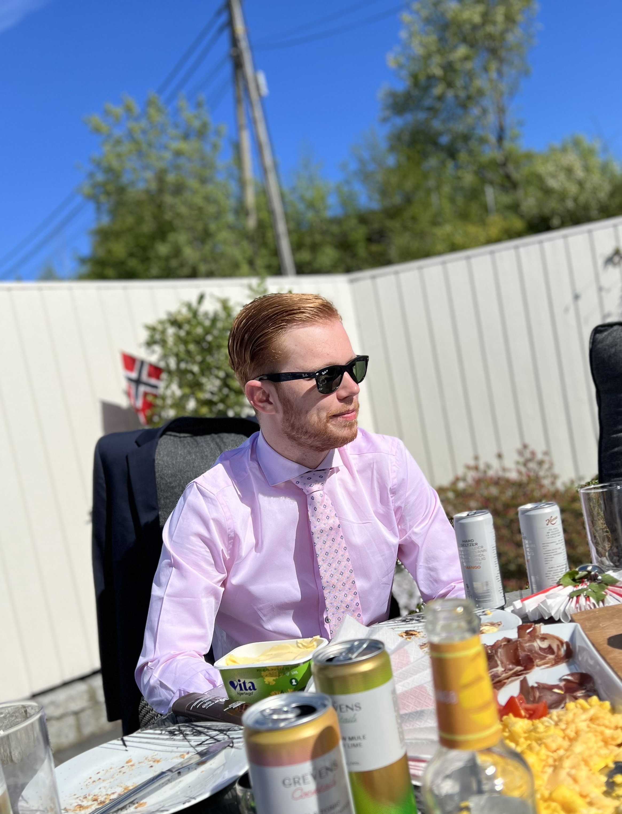

Hi, my name is Sander Hammersland
Front end developer student
About me

I am a student on my way to becoming a front end developer, I study at Noroff school of technology and digital media. So far i have learned the skills of HTML, CSS and Javascript, but there is plenty more to come. As a person i am self driven and hardworking, i have the ability to adapt easy to new environments and very friendly that can fit into many teams.
Current skills:
HTML, CSS, Javascript